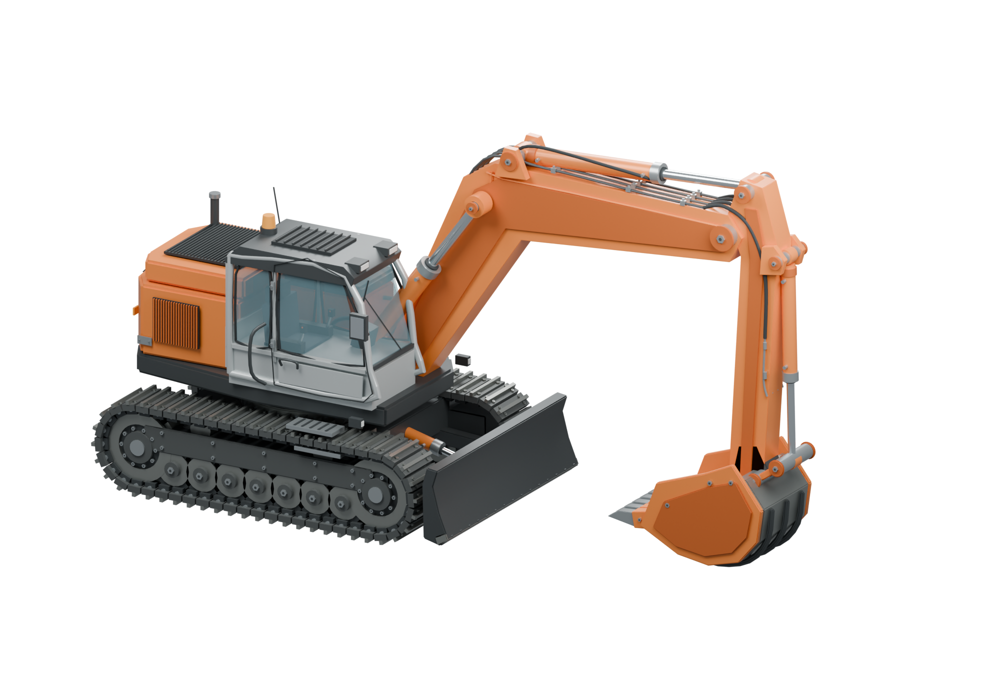

01
Ваш первый рейс
Экскаватор загружает руду. Самосвал поднимается к дробилке. Первая сотня — ваша.
1 ДОСТАВКА +100 монетБОЛЬШАЯ РАБОТА НАЧИНАЕТСЯ С МАЛОГО
Один экскаватор. Один самосвал.
И целый карьер возможностей.

В глубину.
От плато до рудного дна.
Ярусов.
Один непрерывный маршрут.
Серпантина.
Каждый рейс — шаг вперёд.
01 / ОТ ПЕРВОГО РЕЙСА К СВОЕМУ ПАРКУ
ЗАГРУЗИ. ДОСТАВЬ. ВЫРАСТИ.Освойтесь без спешки. Мы покажем, как загрузить руду и заработать первые деньги. Дальше — ваше дело.
Экскаватор загружает руду. Самосвал поднимается к дробилке. Первая сотня — ваша.
1 ДОСТАВКА +100 монетДве доставки окупают второй самосвал. Пока один везёт руду, другой уже готовится к рейсу.
САМОСВАЛ 200 монетЕщё пять доставок — и второй экскаватор ваш. Два места загрузки и всего 4 секунды на кузов.
ЭКСКАВАТОР 500 монет